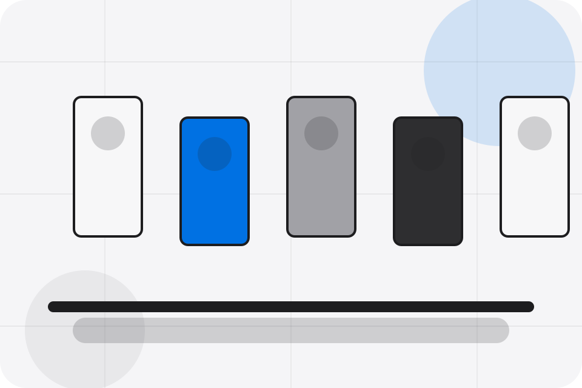

Loyalty / 01
Loyalty by Corner
Loyalty shaped for retail, shops & consumer sales decisions.
Loyalty opens as a clear retail decision hub: what Corner offers, who it helps, why it matters, and which route to take first.
The first screen combines positioning, proof, primary action, and fast internal navigation, so people can act immediately or compare the rest of the loyalty route with context.
Browse quicklyCompare clearlyAsk availability
Soft product shelf hero
Filter the catalogue
Select the closest route and Corner keeps the next step, proof, and follow-up expectation aligned with convenience and offer discovery.

Loyalty / 02
Rewards inside loyalty
Rewards adds commerce context to the loyalty route, using the minimal product store structure to support convenience and offer discovery before visitors choose a next step.
Corner uses rounded product tiles and focused copy to make the decision easier to scan, aligning the section with convenience and offer discovery rather than filling space.
Explore LoyaltyContext
Rewards gives the page a specific angle instead of repeating the navigation label.
Loyalty / 03
Points inside loyalty
Points adds commerce context to the loyalty route, using the minimal product store structure to support convenience and offer discovery before visitors choose a next step.
Corner uses rounded product tiles and focused copy to make the decision easier to scan, aligning the section with convenience and offer discovery rather than filling space.
Explore LoyaltyContext
Points gives the page a specific angle instead of repeating the navigation label.
Judgment
The rounded product tiles show what to compare, what to avoid, and what matters most for retail, shops & consumer sales visitors.
Direction
The final cue points to a useful internal route so the section keeps the journey moving.
Loyalty / 04
Tiers inside loyalty
Tiers adds commerce context to the loyalty route, using the minimal product store structure to support convenience and offer discovery before visitors choose a next step.
Corner uses rounded product tiles and focused copy to make the decision easier to scan, aligning the section with convenience and offer discovery rather than filling space.
Explore Loyalty- 01
Context
Tiers gives the page a specific angle instead of repeating the navigation label.
- 02
Judgment
The rounded product tiles show what to compare, what to avoid, and what matters most for retail, shops & consumer sales visitors.
- 03
Direction
The final cue points to a useful internal route so the section keeps the journey moving.
Loyalty / 05
Benefits: the better state
Benefits defines the better state Corner is built to create, with enough detail to make the promise believable.
A retail shopfront with clean product shelves, rounded offer cards, service proof, and store-finder CTAs. The section grounds that direction in concrete benefits, visible tradeoffs, and a next route visitors can use when the promise feels relevant.
Explore LoyaltyCorner structures benefits around better state, practical gain, and a clear next route so visitors can compare the block quickly before they visit the shop.
Visit ShopLoyalty / 07
Signup inside loyalty
Signup adds commerce context to the loyalty route, using the minimal product store structure to support convenience and offer discovery before visitors choose a next step.
Corner uses rounded product tiles and focused copy to make the decision easier to scan, aligning the section with convenience and offer discovery rather than filling space.
Explore LoyaltyContext
Signup gives the page a specific angle instead of repeating the navigation label.
Judgment
The rounded product tiles show what to compare, what to avoid, and what matters most for retail, shops & consumer sales visitors.
Direction
The final cue points to a useful internal route so the section keeps the journey moving.
Loyalty / 08
Offers: the better state
Offers defines the better state Corner is built to create, with enough detail to make the promise believable.
A retail shopfront with clean product shelves, rounded offer cards, service proof, and store-finder CTAs. The section grounds that direction in concrete benefits, visible tradeoffs, and a next route visitors can use when the promise feels relevant.
Explore LoyaltyOffers defines what becomes clearer, easier, or safer when Corner is the chosen route.
The benefit is tied to convenience and offer discovery, not a vague quality claim.
Visitors get a linked path to compare the promise against services, standards, or examples.
Loyalty / 09
Questions before you visit the shop
Questions handles buying doubts directly so visitors can understand timing, fit, limits, and the safest next step.
Answers are short by design: enough to remove hesitation, not so much that the page turns into documentation before the visitor can act.
Open ContactQuestion
Questions gives the page a specific angle instead of repeating the navigation label.
Answer
The rounded product tiles show what to compare, what to avoid, and what matters most for retail, shops & consumer sales visitors.
Next Step
The final cue points to a useful internal route so the section keeps the journey moving.
What happens first?
Corner starts with a focused intake so the recommendation matches the visitor's context, risk, timing, and readiness.
How is scope kept clear?
Each route explains inclusions, exclusions, documents, timing, and the decision points that affect final delivery.
How is this site different?
The theme uses minimal product store, rounded product tiles, and product/category filter, loyalty signup, store finder rather than a shared template rhythm.
Soft product shelf hero
Filter the catalogue
Select the closest route and Corner keeps the next step, proof, and follow-up expectation aligned with convenience and offer discovery.
Loyalty / 10
Visit Shop
Corner closes the loyalty route with a clear action, a quick reminder of the value, and a low-friction way to visit the shop.
Visitors who are ready can use the primary action. Visitors who are still comparing can scan the section links, proof, and support routes before they visit the shop.
Visit ShopThe final block keeps the choice simple: act now, compare one more proof route, or send enough detail for a focused response.
Visit Shopconvenience and offer discovery
Visit Shop
A retail shopfront with clean product shelves, rounded offer cards, service proof, and store-finder CTAs. Loyalty ends with a direct path to visit the shop, plus enough context for visitors who still need to compare.
Important notes before you act
Information is provided for planning and should be reviewed for the final client, location, and operating rules.